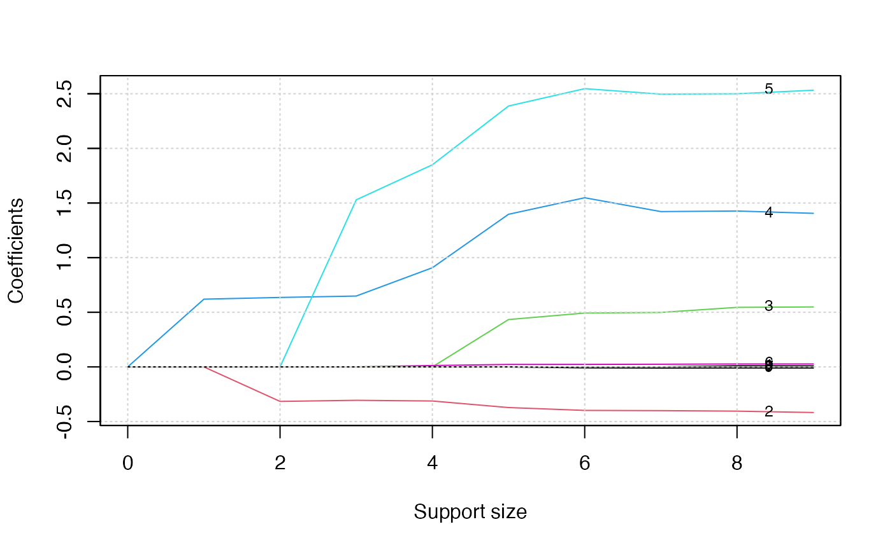
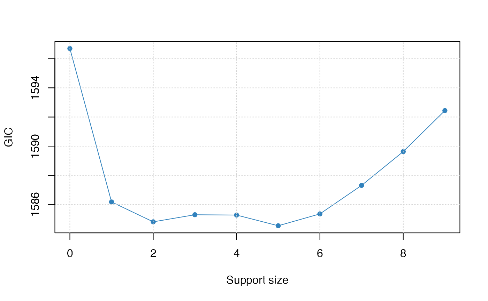

../vignettes/v05-coxreg.Rmd
v05-coxreg.RmdCox Proportional Hazards (CoxPH) regression is to describe the survival according to several covariates. The difference between CoxPH regression and Kaplan-Meier curves or the logrank tests is that the latter only focus on modeling the survival according to one factor (categorical predictor is best) while the former is able to take into consideration any covariates simultaneously, regardless of whether they’re quantitative or categorical. The model is as follow: \[ h(t) = h_0(t)\exp(\eta). \] where,
Consider two case \(i\) and \(i'\) that have different x values. Their hazard functions can be simply written as follow
\[ h_i(t) = h_0(t)\exp(\eta_i) = h_0(t)\exp(x_i\boldsymbol\beta) \] and \[ h_{i'}(t) = h_0(t)\exp(\eta_{i'}) = h_0(t)\exp(x_{i'}\boldsymbol\beta). \] The hazard ratio for these two cases is
\[\begin{align*} \frac{h_i(t)}{h_{i'}(t)} & = \frac{h_0(t)\exp(\eta_i)}{h_0(t)\exp(\eta_{i'})} \\ & = \frac{\exp(\eta_i)}{\exp(\eta_{i'})} \end{align*}\]
which is independent of time.
We are going to apply best subset selection to the NCCTG Lung Cancer Dataset. This dataset consists of survival information of patients with advanced lung cancer from the North Central Cancer Treatment Group. The proportional hazards model allows the analysis of survival data by regression modeling. Linearity is assumed on the log scale of the hazard. The hazard ratio in Cox proportional hazard model is assumed constant. First, we load the data
## inst time status age sex ph.ecog ph.karno pat.karno meal.cal wt.loss
## 1 3 306 2 74 1 1 90 100 1175 NA
## 2 3 455 2 68 1 0 90 90 1225 15
## 3 3 1010 1 56 1 0 90 90 NA 15
## 4 5 210 2 57 1 1 90 60 1150 11
## 5 1 883 2 60 1 0 100 90 NA 0
## 6 12 1022 1 74 1 1 50 80 513 0## [1] 67Then we remove the rows containing any missing data. After that, we have a total of 167 observations.
## [1] 167 9Then we change the factors into dummy variables with the model.matrix() function. Note that the abess() function will automatically include the intercept.
lung$ph.ecog <- as.factor(lung$ph.ecog)
lung <- model.matrix(~., lung)[, -1]We split the dataset into a training set and a test set. The model is going to be built on the training set and later We will test the model performance on the test set.
The abess() function in the abess package allows you to perform the best subset selection in a highly efficient way. For CoxPH model, the survival information should be passed to y as a matrix with the first column storing the observed time and the second the status. The covariates should be passed to x.
After getting the estimator, we can further do more exploring work. The output of abess() function contains the best model for all the candidate support size in the support.size. You can use some generic function to quickly draw some information of those estimators.
# draw the estimated coefficients on all candidate support size
coef(abess_fit)## 10 x 10 sparse Matrix of class "dgCMatrix"
##
## (intercept) . . . . . .
## age . . . . . .
## sex . . -0.3158899 -0.3056507 -0.31215218 -0.37217880
## ph.ecog1 . . . . . 0.43339436
## ph.ecog2 . 0.6198472 0.6356454 0.6485150 0.90762608 1.39697310
## ph.ecog3 . . . 1.5289436 1.85001630 2.38783028
## ph.karno . . . . 0.01230716 0.02223652
## pat.karno . . . . . .
## meal.cal . . . . . .
## wt.loss . . . . . .
##
## (intercept) . . . .
## age . . 0.009612417 0.0087629301
## sex -0.398257611 -0.400263398 -0.405046539 -0.4176205102
## ph.ecog1 0.492850038 0.498563852 0.544978560 0.5487891976
## ph.ecog2 1.548225079 1.421509544 1.426897301 1.4056078686
## ph.ecog3 2.546825864 2.496377201 2.499743506 2.5323174307
## ph.karno 0.022739460 0.024257824 0.026461316 0.0266012605
## pat.karno . -0.008454919 -0.008258875 -0.0076750436
## meal.cal . . . -0.0001728139
## wt.loss -0.008638164 -0.010134095 -0.009558614 -0.0097602080
# get the deviance of the estimated model on all candidate support size
deviance(abess_fit)## [1] 798.3509 791.3829 788.9978 787.5387 785.8258 783.7560 782.4605 781.7364
## [9] 781.1942 780.8985
# print the fitted model
print(abess_fit)## Call:
## abess.default(x = train[, -(1:2)], y = train[, 1:2], family = "cox")
##
## support.size dev GIC
## 1 0 798.3509 1596.702
## 2 1 791.3829 1586.171
## 3 2 788.9978 1584.805
## 4 3 787.5387 1585.292
## 5 4 785.8258 1585.271
## 6 5 783.7560 1584.536
## 7 6 782.4605 1585.350
## 8 7 781.7364 1587.306
## 9 8 781.1942 1589.627
## 10 9 780.8985 1592.440The plot.abess() function helps to visualize the change of models with the change of support size. There are 5 types of graph you can generate, including coef for the coefficient value, l2norm for the L2-norm of the coefficients, dev for the deviance and tune for the tuning value.
plot(abess_fit, label=T)
The graph shows that, beginning from the most dense model, the 4th variable (ph.ecog2) is included in the active set until the support size reaches 0.
We can also generate a graph about the tuning value. Remember that we used the default GIC to tune the support size.
plot(abess_fit, type="tune")
The tuning value reaches the lowest point at 5. And We might choose the estimated model with support size equals 5 as our final model.
To extract the specified model from the abess object, we can call the extract() function with a given support.size. If support.size is not provided, the model with the best tuning value will be returned. Here we extract the model with support size equals 6.
## List of 7
## $ beta :Formal class 'dgCMatrix' [package "Matrix"] with 6 slots
## .. ..@ i : int [1:5] 1 2 3 4 5
## .. ..@ p : int [1:2] 0 5
## .. ..@ Dim : int [1:2] 9 1
## .. ..@ Dimnames:List of 2
## .. .. ..$ : chr [1:9] "age" "sex" "ph.ecog1" "ph.ecog2" ...
## .. .. ..$ : chr "5"
## .. ..@ x : num [1:5] -0.3722 0.4334 1.397 2.3878 0.0222
## .. ..@ factors : list()
## $ intercept : num 0
## $ support.size: num 5
## $ support.vars: chr [1:5] "sex" "ph.ecog1" "ph.ecog2" "ph.ecog3" ...
## $ support.beta: num [1:5] -0.3722 0.4334 1.397 2.3878 0.0222
## $ dev : num 784
## $ tune.value : num 1585The return is a list containing the basic information of the estimated model.
Prediction is allowed for all the estimated model. Just call predict.abess() function with the support.size set to the size of model you are interested in. If a support.size is not provided, prediction will be made on the model with best tuning value. The predict.abess() can provide both link, standing for the linear predictors, and the response, standing for the fitted relative-risk. Here We will predict fitted relative-risk on the test data.
fitted.results <- predict(abess_fit, newx = test, type = 'response')We now calculate the C-index, i.e., the probability that, for a pair of randomly chosen comparable samples, the sample with the higher risk prediction will experience an event before the other sample or belong to a higher binary class. On this dataset, the C-index is 0.64.
library(Hmisc)
Cindex <- max(1-rcorr.cens(fitted.results, Surv(test[, 1], test[,2]))[1],rcorr.cens(fitted.results, Surv(test[, 1], test[,2]))[1])
Cindex## [1] 0.6422652